The visual system & CNNs
Reader-friendly version of the 57 lecture slides: the lecture content in normal flow, with figure descriptions and data tables where the figure carries data. Open the presentation.
Slide 1

The visual system & CNNs
Slide 2
How do we make a network generalize better?
Regularization: any change to training that gives up some fit to the training data to do better on new data
Slide 3
Regularization 1: a penalty on the weights
Computed: the curve fit's 10 points, after Bishop (2006), Fig. 1.7
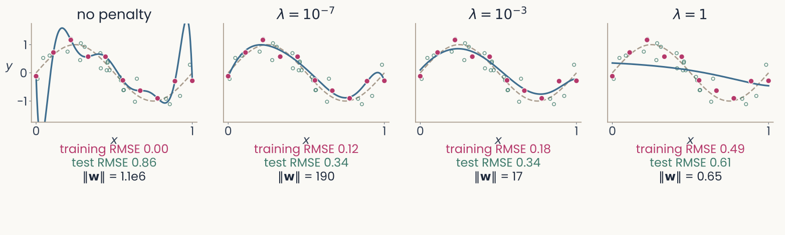
Four panels of the degree-9 polynomial fitted to the same 10 points, with an increasing penalty. No penalty: through every point, swinging far off, error on new points 0.86. Lambda 10 to the minus 7: a smooth curve close to the dashed one, 0.34. Lambda 10 to the minus 3: smooth, 0.34. Lambda 1: an almost flat line, training error 0.49, error on new points 0.61. Open green circles: 25 of the new points the error on new points is measured on
Open full-size figure
- Weight penalty = weight decay = L2 regularization; added to least squares, as in this polynomial fit, it is ridge regression. Too large a underfits
Slide 4
Ridge regression: the penalty on a neuron model
![Two panels for one monkey IT recording site and 512 features of the trained network's late layer. Left: predicted against recorded responses for a ridge fit; training images faint magenta, held-out images green, both scattered along the diagonal, R-squared 0.71 on training and 0.69 on held-out images. Right: R-squared against the penalty lambda on a log axis; with almost no penalty, training R-squared is 0.85 and held-out R-squared 0.28; as the penalty grows, training R-squared falls while held-out R-squared rises to meet it near 0.69 at the penalty chosen on the training images, then both fall](../images/L07/encoding_fit_heldout.svg)
Two panels for one monkey IT recording site and 512 features of the trained network's late layer. Left: predicted against recorded responses for a ridge fit; training images faint magenta, held-out images green, both scattered along the diagonal, R-squared 0.71 on training and 0.69 on held-out images. Right: R-squared against the penalty lambda on a log axis; with almost no penalty, training R-squared is 0.85 and held-out R-squared 0.28; as the penalty grows, training R-squared falls while held-out R-squared rises to meet it near 0.69 at the penalty chosen on the training images, then both fall
Open full-size figureComputed: one monkey IT site (Bao et al. 2020), 1,224 object images, 512 late-layer units of ResNet-18; a random fifth held out
- Encoding model: one IT site from 512 units by ridge regression, λ by
RidgeCV; too small a λ overfits (held-out 0.28 vs 0.69). You fit it in the second assignment; the next fits V1, V4 and IT
Slide 5
Regularization 2: dropout

Three copies of the same small network: in the first two, a different random half of the hidden units is switched off for one training step each, with their connections removed; in the third, at test time, all units are on
Open full-size figure- Dropout: at each training step, switch off a random half of the hidden units; all are on at test time
- Often with the weight penalty, sometimes L1 (absolute values): each cuts the freedom to fit noise
Slide 6
Regularization 3: more examples
Computed: the same curve and noise, after Bishop (2006), Fig. 1.6
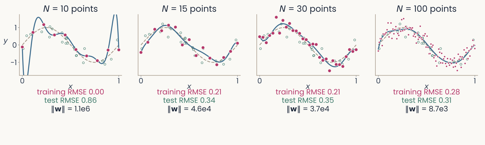
Four panels of the same degree-9 polynomial fitted to more and more noisy points from the dashed sine-shaped curve. N equals 10: the curve swings far off, error on new points 0.86. N equals 15: close to the dashed curve, 0.34. N equals 30: 0.35. N equals 100: the fitted curve follows the dashed one, training error 0.28, error on new points 0.31. Open green circles: 25 of the new points the error on new points is measured on
Open full-size figure
- Last lecture: the same degree-9 polynomial fitted to 10, 15, 30 and 100 points; test RMSE 0.86 → 0.31
- With 10 points it passes through every one; with 100 it cannot, and follows the curve instead
- More examples always help the same model: overfitting is flexibility relative to the number of examples
Slide 7
No more data? Make altered copies of it

Four versions of one photograph of a pink orchid: the original; flipped left to right; cropped and enlarged; and with its colour faded and raised
Open full-size figure- Data augmentation: train on altered copies that keep the label (flipped, cropped, recoloured). AlexNet trained on 2,048 versions of each photo
- An augmentation states what should not change the label: a flipped orchid is still an orchid
Slide 8
Which brain areas turn an image into an object?
People spot an animal in a glance shorter than a blink. What does each area compute, and can a model built from the areas do it too?
Slide 9
Core object recognition: animal or not?
Slide 10
Monkeys do it too
- Trained on the same task, monkeys answer as fast as people. A few electrodes over the middle and higher ventral areas: the category can be read from their activity, and the read-out tracks the monkey's answers
Slide 11
The ventral stream: a hierarchy of areas
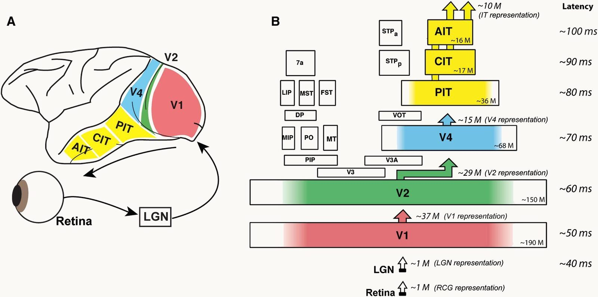
The ventral-stream hierarchy from retina and LGN through V1, V2, V4 to IT, with latencies growing from about 40 to 100 ms and neuron counts per stage
Open full-size figure
- Retina → LGN → V1 → V2 → V4 → IT: each area responds later, and its receptive fields (the part of the visual field a neuron responds to) are larger
- Tuning gets more complex (edges, parts, objects) and more tolerant of position and size
- In IT, a linear readout of ~100 neurons reports the category: untangling, measured
Slide 12
Retina and LGN: Kuffler's centre–surround cells

Kuffler 1953 as redrawn in Hubel's Eye, Brain and Vision: for an on-centre retinal ganglion cell, four stimuli and their spike records: a small spot in the centre gives a burst while the light is on; a larger spot covering centre and surround gives little; a ring on the surround silences the cell and gives a burst when the light goes off; diffuse light over the whole field gives almost nothing
Open full-size figure- A ganglion cell of the retina, and an LGN cell after it: a spot in the centre excites, light on the surround inhibits, uniform light does nothing. These cells report local contrast, not brightness
Slide 13
V1: oriented receptive fields, fit by Gabor functions

Hubel and Wiesel 1962, receptive fields of cat cortical cells mapped by hand with spots and bars of light: triangles mark positions where light excites the cell, crosses where it inhibits; panels a and b are circular centre-surround maps, c to g are elongated maps with an ON stripe flanked by OFF regions at one orientation
Open full-size figure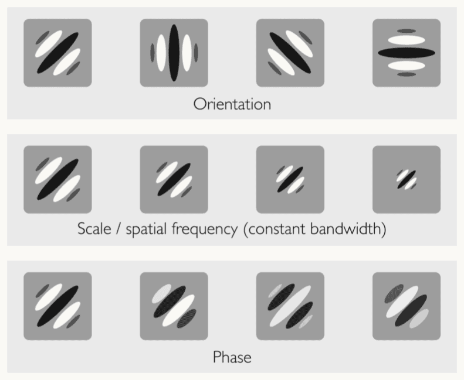
Twelve Gabor patches in three rows: the top row varies orientation, the middle row varies scale or spatial frequency at constant bandwidth, the bottom row varies phase; each patch is a set of light and dark stripes inside a smooth window
Open full-size figure
- Hubel & Wiesel mapped V1 cells by hand: an ON stripe with OFF flanks at one orientation (c–g; a–b are centre–surround). A Gabor, stripes in a smooth window, fits them: orientation, size, phase
Slide 14
Up the hierarchy: larger fields, more complex selectivity

Kobatake and Tanaka 1994: receptive fields recorded along the ventral stream of the macaque drawn on the visual field, with lines to their recording sites on an outline of the cortex; small squares near the fovea for early areas, growing to squares and rectangles ten to twenty degrees across for anterior IT; a bar marks ten degrees
Open full-size figure- From V1 to IT each neuron's window grows, from a degree to most of the visual field, and what drives it changes from bars to objects: a gradual increase in field size and in the complexity of the preferred stimulus
Slide 15
V2, V4, posterior and anterior IT: what the cells prefer

Tanaka's table of critical features by area, four columns: V2, bars, gratings and spots; V4, textured and curved shapes; posterior IT, parts of objects; anterior IT, faces, hands and complex shapes
Open full-size figure
Desimone et al. 1984: the firing of one IT neuron, as spike histograms, to a monkey face and to reduced versions of it: the full face, a cartoon face, scrambled parts, the face without eyes, a black-and-white face, a face without colour, a human face, a hand; the response collapses for scrambled parts and the hand
Open full-size figure- Tanaka's reduction method, simplify the picture until the response drops: bars in V2, curves and textures in V4, parts in posterior IT, faces and hands in anterior IT. A face cell stops firing when the parts are scrambled, and keeps firing across position and size
Slide 16
Reading the category from IT, with a handful of neurons
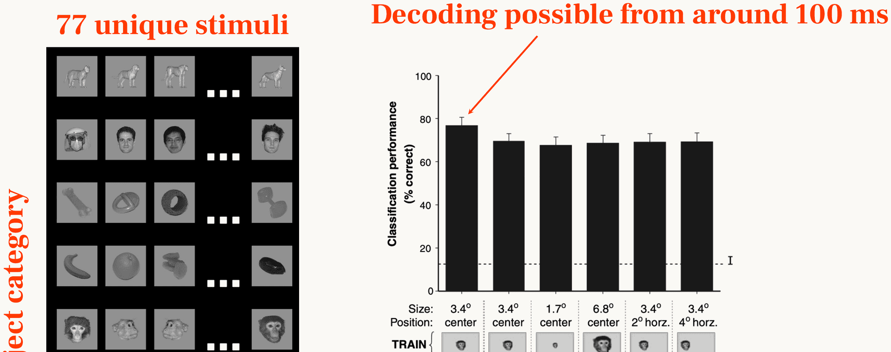
Hung et al. 2005 as laid out on a slide: 77 pictures of 8 object categories on the left; on the right, bar chart of classification performance, about 70 to 90 percent correct, for a linear classifier trained on IT population responses and tested at other positions and sizes of the objects, with the label decoding possible from around 100 ms
Open full-size figure
- Hung, Kreiman, Poggio & DiCarlo (2005): 77 pictures, 8 categories, about 300 IT sites. A linear readout of the population names the category about 100 ms after the image appears, and still does when the object moves or changes size
Slide 17
Mechanism: a row of LGN cells makes a simple cell
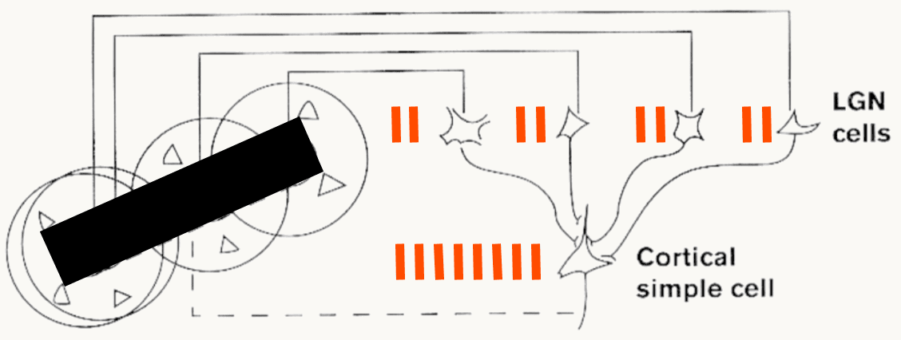
Hubel and Wiesel's wiring model: four LGN cells with centre-surround receptive fields lying in a row along a bar of light, each firing briskly, all converging on one cortical simple cell, which fires strongly
Open full-size figure
- Hubel & Wiesel's proposal: several LGN cells whose centres lie in a row converge on one cortical cell. A bar along the row drives all of them at once, and the cortical cell fires strongly
Slide 18
Tilt the bar, and the simple cell goes quiet
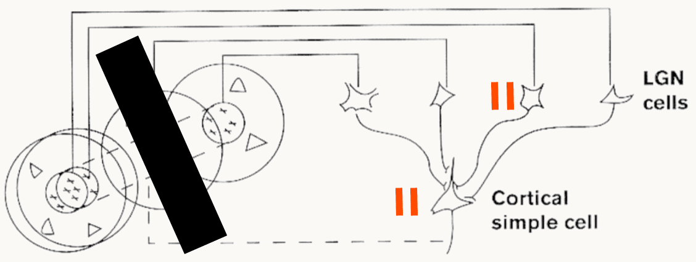
The same wiring model with the bar of light tilted away from the row of LGN cells: only one LGN cell is well lit and fires a little, the others are silent, and the cortical simple cell fires only two spikes
Open full-size figure
- Tilt the bar: it crosses only one LGN centre, the others stay silent, and the cortical cell barely fires. Orientation selectivity comes from the wiring, not from the LGN cells themselves
Slide 19
Mechanism: simple cells at neighbouring positions
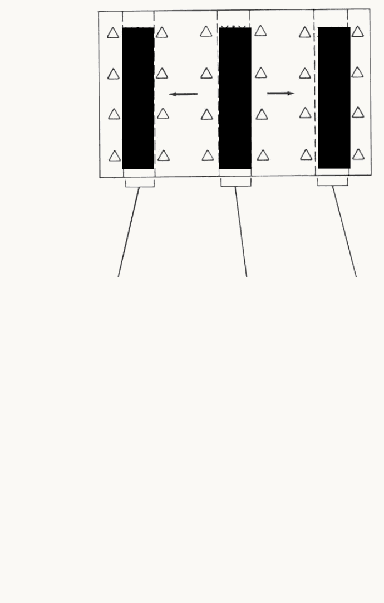
Three simple cortical cells side by side, each with an oriented receptive field, an ON stripe between OFF flanks, at a neighbouring position along a line; a bar of the preferred orientation drives whichever cell it falls on
Open full-size figure
- Three simple cells, the same orientation, fields side by side: each fires only when the bar falls in its own field
Slide 20
Mechanism: they converge on a complex cell
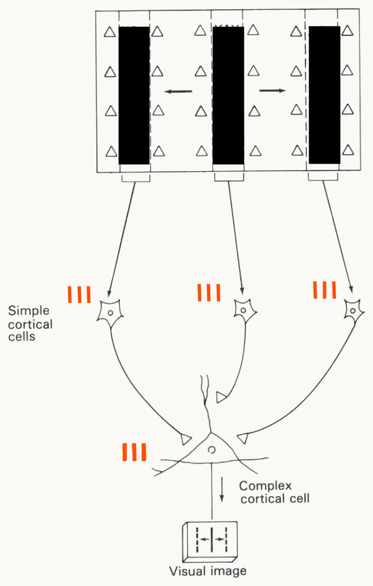
Hubel and Wiesel's model of a complex cell: the three simple cortical cells converge on one complex cortical cell, which therefore fires to the bar anywhere across the three fields
Open full-size figure
- Wire the three onto one complex cell: it keeps the orientation and responds to the bar anywhere in the larger field. Selectivity, then tolerance
Slide 21
V1 in one picture: ganglion → simple → complex

Three columns of icons: ganglion cells, an on-centre and an off-centre circle; simple cells, an oriented bar on a dark or light background at one position; complex cells, an oriented bar with arrows showing it can move across the field
Open full-size figure- Centre–surround → oriented at one position → oriented anywhere nearby: a weighted sum, then a pooling, the two operations every stage of today's models repeats
Slide 22
Building vision from biology
1980 to 2012: simple and complex cells repeated into a hierarchy, the Neocognitron, HMAX, then the networks that took over
Slide 23
Fukushima's Neocognitron (1980)
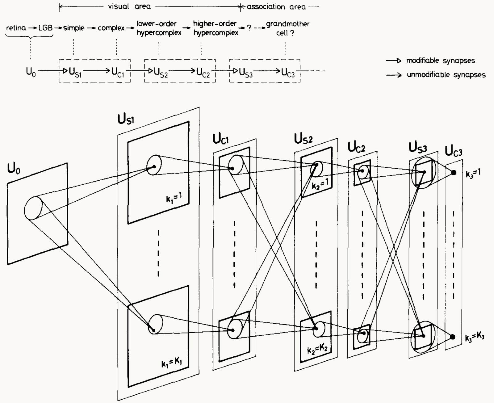
Fukushima 1980, Figures 1 and 2. Top: the correspondence between Hubel and Wiesel's hierarchy, retina, LGB, simple, complex, lower-order and higher-order hypercomplex cells, and the network's layers U0, US1, UC1, US2, UC2, US3, UC3, with modifiable synapses into each S layer. Bottom: the interconnections between layers, each layer a stack of cell planes k = 1 to K, each cell reading from a small patch of the layer before, the patches growing with depth
Open full-size figure
- S-cells: simple cells, one template per plane, at every position. C-cells: pool nearby S-cells of one plane
- Repeat S then C; the top responds to a whole digit wherever it sits. Trained without labels, layer by layer
Slide 24
Cortical columns: every orientation, at every position

The ice-cube model of primary visual cortex: a block of cortex with layers I to VI, divided into left-eye and right-eye ocular dominance slabs, crossed by orientation columns colour-coded blue, green, yellow and red for horizontal, oblique, vertical and the other oblique, with cytochrome-oxidase blobs as dashed cylinders
Open full-size figure- Hubel and Wiesel's ice-cube model: a small block of V1 holds every orientation for both eyes; the block is repeated across the whole visual field
- So the same oriented template exists at every position, each copy a separate set of cells: replication
- A map of the image, position by position, in which each place is examined by the same set of templates
Slide 25
Retinotopic organization versus convolution
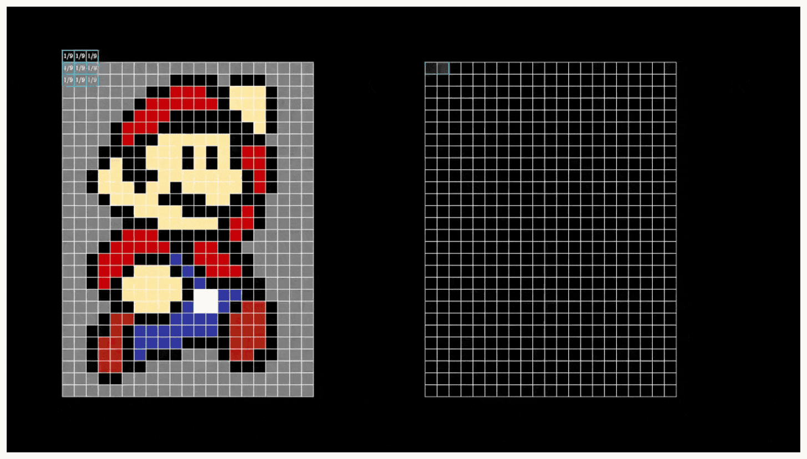
A pixel-art Mario on a grid of squares, next to an empty grid with one small template window highlighted at its top-left corner: the template is slid over the image, and the match at each position fills the second grid
Open full-size figure
- The image is a grid of numbers; the cortex gives every position its own cells. A computer keeps one template and slides it: at each position, the match is written into a second grid. Convolution is template matching at every position
- AlexNet's first layer: 96 filters of 11 × 11 × 3, 34,848 weights, reused everywhere; 96 dense units on the pixels would need 14 million
Slide 26
Convolution: one filter, slid over the image

Left, the grey-level tiger photograph with a small magenta box at one position; middle, an 11 by 11 filter of oriented light and dark stripes; right, the feature map: bright where the image contains stripes at the filter's orientation, dark elsewhere, with the strongest response circled at the boxed position
Open full-size figureComputed on the tiger photograph of the first lecture
- A filter (or kernel): a small grid of weights, the template of the previous slide. At each position, multiply by the pixels under it and sum; a ReLU sets negatives to 0
- The result is a feature map: how well each part of the image matches the filter
- Same weights everywhere: shift the image, and the map shifts with it (equivariance)
Slide 27
Try it: slide the filter yourself
- One 7 × 7 filter, the tiger in 96 × 96 grey levels: step the window, read the dot product, watch the map fill in; then switch the filter
Slide 28
The convolutional layer, in notation
- : the layer's feature maps, of them, one channel per filter; is each map's height and width
- : the layer's filters, each , one slice per input channel · slides them over · : one bias per channel · : ReLU
- It is the MLP layer with each unit wired only to a patch of all input maps, and the same weights at every position. Weights per layer:
Slide 29
Stride and padding set the size of a map

Two panels. Left: a 5 by 5 input surrounded by one ring of zeros, a 3 by 3 filter at its first position and, dashed, one step to the right, labelled stride 1; output 5 by 5. Right: the same input with the filter moved two steps, stride 2; output 3 by 3
Open full-size figure- Stride : how far the filter moves between positions. Stride 2 skips every other position, so the map is about half as tall and half as wide
- Padding : rows and columns of zeros around the input, so the filter can also sit on the border
- Output size for a filter: . ResNet-50's first layer: 224, , , , gives 112
Slide 30
Pooling: from a map to fewer numbers

A 4 by 4 feature map with values 0 to 6, shaded in four 2 by 2 windows. Upper arrow: max-pooling with 2 by 2 windows and stride 2 keeps the largest value in each window, giving the 2 by 2 map 5, 1, 1, 6. Lower arrow: global average pooling averages all 16 values into one number, 1.625
Open full-size figure- Max-pooling keeps the largest value in each small window: the C-cell, the complex cell's "OR", which tolerates small shifts
- Global average pooling averages each feature map over all its positions: one number per channel. These numbers, one per channel, form the image's feature vector, the readout's input
- Two ways to shrink a map: pooling, or a stride-2 convolution. Many modern networks use mostly the second, then one global average
Slide 31
HMAX: a hierarchy constrained by physiology
![Serre et al. 2007, Figure 1: on the left the wiring diagram of the primate visual system, dorsal and ventral streams from V1 through V2, V4, PIT and AIT to prefrontal cortex; in the middle the model, simple units (solid circles) and complex units (dashed circles) alternating from oriented S1 filters on a photograph of cows up to an animal versus non-animal classification unit, with bypass routes; on the right a table of the layers S1 to S4 and C1 to C3 with their receptive-field sizes from 0.2 to 7 degrees and their numbers of units from a million to a hundred](../images/L11/pub_serre2007_wiring_hmax.png)
Serre et al. 2007, Figure 1: on the left the wiring diagram of the primate visual system, dorsal and ventral streams from V1 through V2, V4, PIT and AIT to prefrontal cortex; in the middle the model, simple units (solid circles) and complex units (dashed circles) alternating from oriented S1 filters on a photograph of cows up to an animal versus non-animal classification unit, with bypass routes; on the right a table of the layers S1 to S4 and C1 to C3 with their receptive-field sizes from 0.2 to 7 degrees and their numbers of units from a million to a hundred
Open full-size figure- The wiring of the visual system on the left, the model on the right: S and C alternate from V1 to IT, pooling by the maximum; every receptive-field size, unit count and tuning width set from anatomy and physiology; templates copied from natural images; no backprop; labels only at the readout
Slide 32
What one constrained model accounted for
![Table from Serre and Poggio 2010: quantitative data compatible with the model, by area. Psychophysics: rapid animal categorization and the face inversion effect; LOC: face processing in fMRI; PFC: the differential role of IT and PFC in categorization; IT: tuning and invariance properties, read-out for object category, the average effect in IT; V4: the MAX operation, tuning for two-bar stimuli, two-spot interaction, tuning for boundary conformation, tuning for Cartesian and non-Cartesian gratings; V1: simple and complex cell tuning properties, the MAX operation in a subset of complex cells. Rows in blue are predictions the model made before the data, rows in red data consistent with the model, rows in black data used to set its parameters](../images/L11/pub_serre2010_acm_table.png)
Table from Serre and Poggio 2010: quantitative data compatible with the model, by area. Psychophysics: rapid animal categorization and the face inversion effect; LOC: face processing in fMRI; PFC: the differential role of IT and PFC in categorization; IT: tuning and invariance properties, read-out for object category, the average effect in IT; V4: the MAX operation, tuning for two-bar stimuli, two-spot interaction, tuning for boundary conformation, tuning for Cartesian and non-Cartesian gratings; V1: simple and complex cell tuning properties, the MAX operation in a subset of complex cells. Rows in blue are predictions the model made before the data, rows in red data consistent with the model, rows in black data used to set its parameters
Open full-size figure- One model, one set of parameters, tested from V1 to behaviour
- Black: data used to set the parameters. Red: data the model agrees with. Blue: predictions made before the data, such as the MAX in V4 and in some V1 complex cells
- V4 tuning for curved boundaries (Pasupathy & Connor) and the IT read-out of category (Hung et al.) came out of the same units
Slide 33
The test on behaviour: rapid animal categorization

Performance in d-prime for the model, red solid line, and for human observers, blue dashed line, across four viewing distances, head, close-body, medium-body and far-body: both peak near 2.5 at close-body and fall to about 1.4 at far-body, with overlapping error bars
Open full-size figure
The stimulus set: animals photographed at four viewing distances, head, close-body, medium-body and far-body, each with a matched distractor scene
Open full-size figure- Serre, Oliva & Poggio (2007): the task of the opening slide, 20 ms images, a mask after 80 ms to cut off feedback
- The model's accuracy, as , matched people's at every viewing distance, and it was wrong on the same images more often than chance
- The claim: one feedforward sweep explains the first 150 ms of vision
Slide 34
Then scale took over
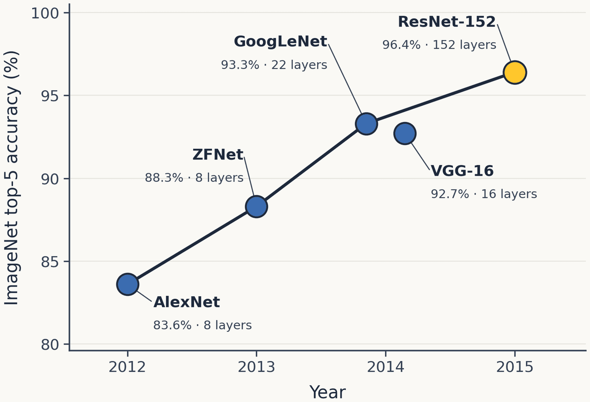
ImageNet top-5 accuracy against year for five networks: AlexNet 2012, 83.6 percent with 8 layers; ZFNet 2013, 88.3 percent, 8 layers; GoogLeNet 2014, 93.3 percent, 22 layers; VGG-16 2014, 92.7 percent, 16 layers; ResNet-152 2015, 96.4 percent, 152 layers, highlighted
Open full-size figure
- CNNs existed, LeCun's LeNet (1998), with every filter learned end to end by backprop; through the 2000s they and HMAX were about equally good, and neither scaled
- What changed in 2012: GPUs, and 1.2 million labelled photographs (ImageNet). AlexNet, then 8 → 152 layers in three years, better every year
- The biology was kept as architecture; the constraints were dropped: no fixed tuning widths, no fixed pooling sizes, just whatever fits the labels
Slide 35
Did better AI mean better models of the brain?
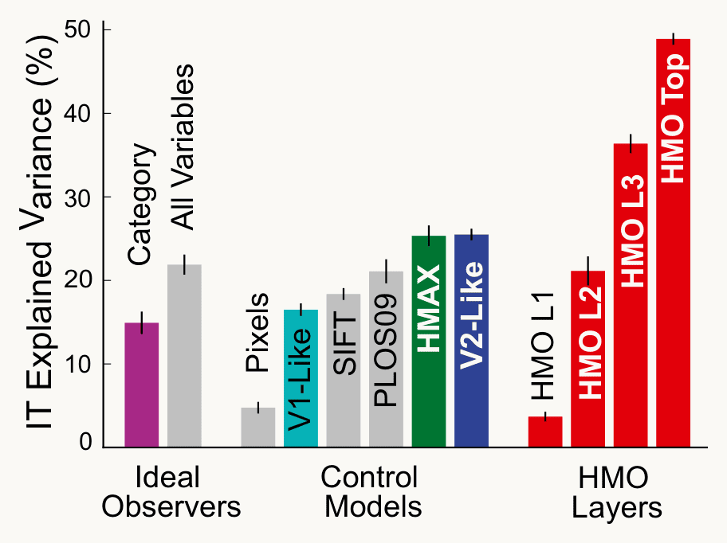
Bar chart of IT explained variance in percent: ideal observers, category 15 and all variables 22; control models, pixels 5, V1-like 16, SIFT 18, PLOS09 21, HMAX 25, V2-like 25; the layers of the performance-optimized HMO model, L1 4, L2 21, L3 36, top 48
Open full-size figure
Reproduced from Yamins et al. (2014), Fig. 3C
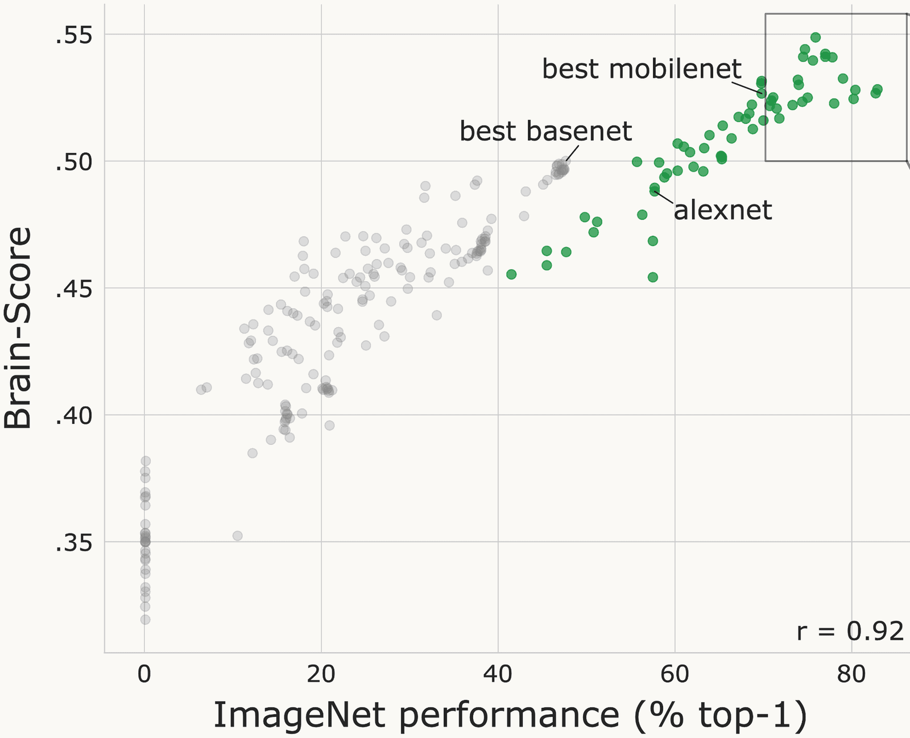
Scatter of Brain-Score, 0.35 to 0.55, against ImageNet top-1 accuracy, 0 to 80 percent, for hundreds of networks: grey dots are small networks built by search, green dots are published deep networks from AlexNet near 57 percent to models near 80 percent; the correlation is 0.92
Open full-size figure
Reproduced from Schrimpf et al. (2018), Fig. 2
- Yamins et al. (2014): a network optimized only for recognition predicted IT better than HMAX, 48% vs 25%. Brain-Score (2018): ImageNet accuracy predicted brain fit, r = 0.92
Slide 36
Past a point, the trend reverses
![Scatter of neural alignment, 0.2 to 1.0, against ImageNet multi-label accuracy, 0.5 to 1.0, for several hundred models coloured by family: CNNs trained on ImageNet-1K in red, adversarially trained CNNs in yellow, convolutional vision transformers in green, vision transformers in blue, with internet-scale and vision-and-language variants in lighter shades; a grey band marks human accuracy near 0.93 to 0.97. Two dashed lines: alignment rises with accuracy up to about 0.9, then falls; purple stars mark recent models SigLIP-2, DINOv3 ViT-L and ViT-H, I-JEPA, vJEPA2 and EVA-02, the most accurate of which sit lowest](../images/L11/tics2026_neural_alignment.png)
Scatter of neural alignment, 0.2 to 1.0, against ImageNet multi-label accuracy, 0.5 to 1.0, for several hundred models coloured by family: CNNs trained on ImageNet-1K in red, adversarially trained CNNs in yellow, convolutional vision transformers in green, vision transformers in blue, with internet-scale and vision-and-language variants in lighter shades; a grey band marks human accuracy near 0.93 to 0.97. Two dashed lines: alignment rises with accuracy up to about 0.9, then falls; purple stars mark recent models SigLIP-2, DINOv3 ViT-L and ViT-H, I-JEPA, vJEPA2 and EVA-02, the most accurate of which sit lowest
Open full-size figure- Hundreds of networks, scored on how well their features predict monkey IT. Up to about human accuracy the fit rises; beyond it, the most accurate networks are worse models of IT
Slide 37
But a network can be opened
Every unit can be recorded, every image can be changed: what did these networks learn, layer by layer?
Slide 38
What the first layer learns
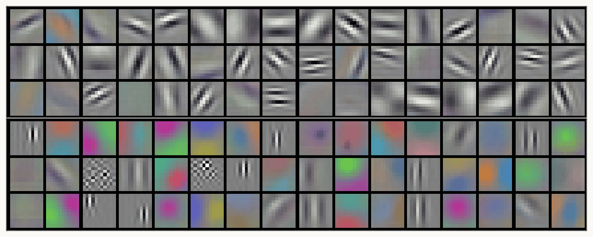
AlexNet's 96 first-layer filters from Krizhevsky et al. 2012, Figure 3: the top three rows mostly grey oriented edges and gratings at several sizes, the bottom three rows mostly colour blobs and colour edges
Open full-size figure
- Each tile is one of AlexNet's 96 first-layer filters, 11 × 11 × 3, shown as a colour image
- Learned from 1.2 million labeled images: oriented edges, gratings and colour blobs
- Nobody set them: training on labels alone produced Gabor-like filters, like V1 simple cells
Slide 39
Quantified: V1 cells and AlexNet's first layer
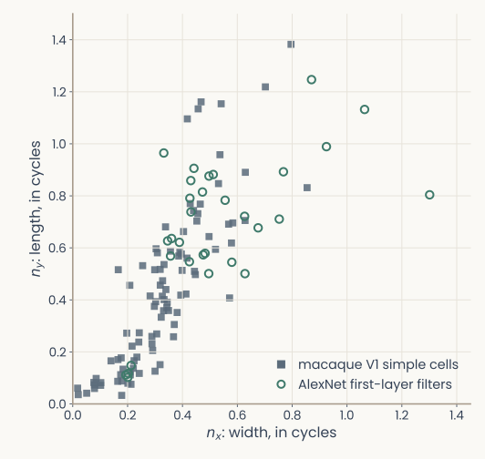
The same scatter and axes as the previous slide, with the toy units removed: macaque V1 simple cells as grey squares near the origin, and AlexNet's first-layer filters that a Gabor fits well as open green circles; the filters overlap the cells but sit systematically larger
Open full-size figure
- Filled squares: macaque V1 simple cells. Open circles: AlexNet's first-layer filters, each fit by a Gabor
- The same two numbers place a cell and a network unit on one plot
- Do the network's filters look like V1 cells, and where do they differ?
Slide 40
Template matching, measured
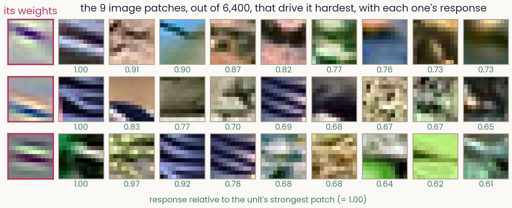
Three first-layer AlexNet units. For each, its weights on the left, then the 9 natural image patches out of 6,400 that drive it hardest, each with its response relative to the strongest patch. Unit 1: 1.00 down to 0.73; unit 2: 1.00 down to 0.65; unit 3: 1.00 down to 0.61. For the unit tuned to diagonal edges, the patches look like the weights
Open full-size figure- AlexNet's first layer, 11 × 11 colour patches. You made a version of this figure in the second assignment
- The top 9 of 6,400 patches by ; the 9th still gives 0.61–0.73 of the top
- For a unit tuned to edges at one angle, the patches look like the weights. Not every unit is that simple
Slide 41
What the units like, layer by layer
![Grid with four rows for ResNet-50's conv1, layer2, layer3 and layer4. Each row shows six panels: for conv1 the learned 7 by 7 filters as images, oriented edges and colour blobs; for layer2, layer3 and layer4, feature visualizations, images optimized to drive one unit, showing stripes and textures in layer2, repeated patterns and object parts in layer3, and parts of animals and objects in layer4. A right-hand column shows what electrophysiologists showed each area: an oriented bar for V1, curved shapes for V4 from Pasupathy and Connor, and Tanaka's critical features by IT column for IT](../images/L11/hierarchy_meis_vs_physiology.png)
Grid with four rows for ResNet-50's conv1, layer2, layer3 and layer4. Each row shows six panels: for conv1 the learned 7 by 7 filters as images, oriented edges and colour blobs; for layer2, layer3 and layer4, feature visualizations, images optimized to drive one unit, showing stripes and textures in layer2, repeated patterns and object parts in layer3, and parts of animals and objects in layer4. A right-hand column shows what electrophysiologists showed each area: an oriented bar for V1, curved shapes for V4 from Pasupathy and Connor, and Tanaka's critical features by IT column for IT
Open full-size figure- Feature visualization: climb the image, by gradient ascent, until one unit responds most (how, next lecture). Edges, then textures, then parts, then objects, as in V1, V4 and IT
Slide 42
The network you will build, and the one you will reuse
A mini-HMAX in PyTorch, then ResNet-50: how it is made deep, trained, and fine-tuned for a new task
Slide 43
A mini-HMAX in PyTorch: the network you will train
class MiniHMAX(nn.Module):
def __init__(self, num_classes):
super().__init__()
self.s1 = nn.Sequential(nn.Conv2d(3, 16, kernel_size=5, padding=2), nn.ReLU())
self.c1 = nn.MaxPool2d(4) # max over 4 × 4 blocks
self.s2b = nn.Sequential(nn.Conv2d(16, 64, kernel_size=7, padding=3), nn.ReLU())
self.c2b = nn.AdaptiveMaxPool2d(1) # max over all positions
self.readout = nn.Linear(64, num_classes)
def forward(self, images): # (batch, 3, 224, 224)
hidden = self.s1(images) # (batch, 16, 224, 224)
hidden = self.c1(hidden) # (batch, 16, 56, 56)
hidden = self.s2b(hidden) # (batch, 64, 56, 56)
pooled = self.c2b(hidden).flatten(1) # (batch, 64)
return self.readout(pooled) # class logits
- S: template matching (convolution, ReLU); C: a maximum over positions. HMAX's bypass route, S1 → C1 → S2b → C2b: the network you will train, with Adam, then a cosine schedule (
CosineAnnealingLR), keeping the best validation epoch
Slide 44
Deeper networks: add the input back
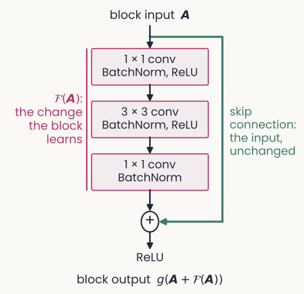
A residual block: the block input A passes through a 1 by 1 convolution with BatchNorm and ReLU, a 3 by 3 convolution with BatchNorm and ReLU, and a 1 by 1 convolution with BatchNorm, together labelled F of A, the change the block learns; a green skip connection carries A unchanged around them to a plus node, followed by a ReLU, giving the block output g of A plus F of A
Open full-size figure
- Stacking more plain layers made networks harder to train: a 56-layer network reached higher training error than a 20-layer one
- A residual block computes a change and adds it to its input: output . The added path is a skip connection
- If a block is not needed, its change can stay near zero and the input passes through: networks of 50 to 152 layers trained well
- Each convolution is followed by BatchNorm, explained two slides on
Slide 45
ResNet-50: four block groups
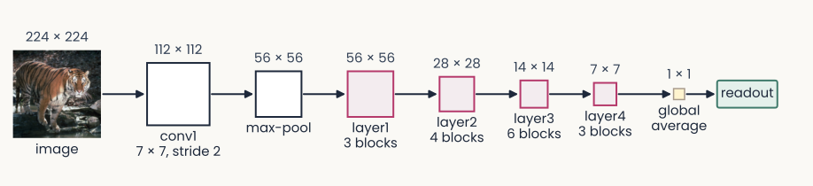
ResNet-50 from left to right: a 224 by 224 tiger image; conv1, a 7 by 7 convolution at stride 2, 112 by 112; max-pool, 56 by 56; layer1, 3 blocks, 56 by 56; layer2, 4 blocks, 28 by 28; layer3, 6 blocks, 14 by 14; layer4, 3 blocks, 7 by 7; global average, 1 by 1; readout
Open full-size figure
- ResNet-50 stacks 16 residual blocks in four block groups, named
layer1tolayer4in PyTorch. Each group after the first starts by halving the maps' height and width layer4is the last group: its 7 × 7 maps are averaged (global average pooling) into the image's feature vector, then a readout names the category- The ResNet-18 you recorded earlier in the course uses the same names; its
layer1,layer3andlayer4were the early, middle and late stages
Slide 46
Batch normalization
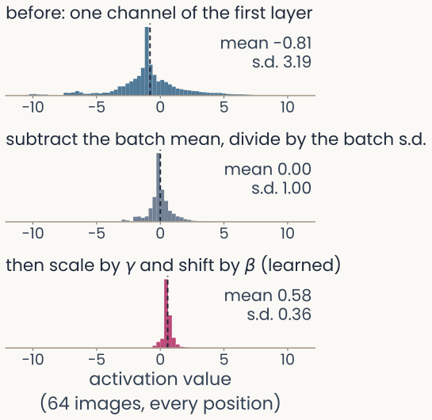
Three histograms of one channel of ResNet-50's first layer over 64 photographs and every position. Before: mean minus 0.81, standard deviation 3.19, spread from about minus 10 to 10. After subtracting the batch mean and dividing by the batch standard deviation: mean 0, standard deviation 1. After the learned scale gamma and shift beta: mean 0.58, standard deviation 0.36
Open full-size figure
Computed: ResNet-50, 64 Imagenette photographs
- As training changes the weights of earlier layers, the scale of each channel's values drifts. Batch normalization (BatchNorm) rescales every channel, layer after layer
- For each channel: subtract the mean and divide by the standard deviation (s.d.) of the current minibatch (all its images and positions), then apply a learned scale and shift
Slide 47
Training mode and evaluation mode
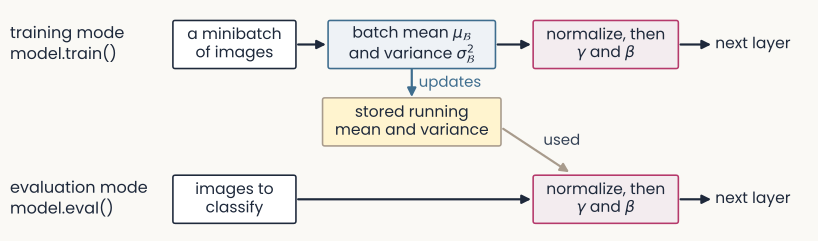
Two rows. Training mode, model.train(): a minibatch of images gives the batch mean and variance, used to normalize before gamma and beta and the next layer; the batch statistics also update a stored running mean and variance. Evaluation mode, model.eval(): images to classify are normalized with the stored running mean and variance, then gamma and beta, then the next layer
Open full-size figure
- Training mode normalizes with the minibatch's own statistics, and updates a running mean and variance: averages over the training batches
- Evaluation mode (
model.eval()) normalizes with those stored values instead - The stored values are not weights: no gradient changes them.
model.eval()does not turn gradients off
Slide 48
How do we reuse a network trained on other images?
Freeze it, fine-tune part of it, or start from features learned without labels
Slide 49
Freeze the encoder, or fine-tune the last block group
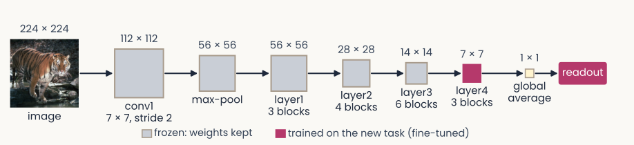
The same ResNet-50 diagram, now coloured: conv1, max-pool and layer1 to layer3 in grey, frozen, weights kept; layer4 and the readout in magenta, trained on the new task, fine-tuned
Open full-size figure
- The encoder is every layer before the readout. Frozen: its weights stay fixed. Fine-tuning: keep training some pretrained weights on the new task
- A middle road between a new readout on frozen features and backprop into every layer: freeze
conv1tolayer3; fine-tunelayer4and the readout - Freezing the weights does not freeze BatchNorm: in
model.train()the frozen layers' running statistics still change. Keep their BatchNorm in evaluation mode
Slide 50
What does a network rely on? Texture or shape
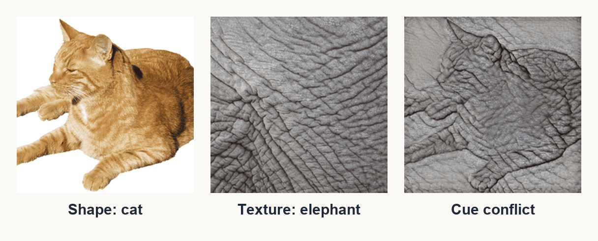
Three images: a photograph of a ginger cat labelled shape: cat; a close-up of grey wrinkled elephant skin labelled texture: elephant; and the cue-conflict image, the cat's outline filled with elephant-skin texture
Open full-size figure
- Recall the generalization lecture: an ImageNet-trained ResNet-50 calls a cat with elephant skin "elephant"; people go by the shape (Geirhos et al. 2019). Training on images repainted in random textures made it rely more on shape: what a network relies on depends on its training images
- An accuracy score cannot say which part of an image drove a decision. To find out, change the image and watch the answer: the next slide
Slide 51
Which pixels does a decision use? Occlusion
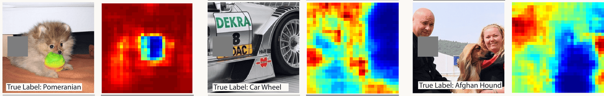
Three pairs side by side, each a test photograph with a grey square over part of it and, to its right, a map of the probability of the correct class as the square moves: a Pomeranian dog, low only where the square covers the dog's face; a racing car's wheel, low over the wheel; a man with an Afghan hound, low over the dog and not over the man's face
Open full-size figure
- Cover part of the image with a grey square, run the network again, and repeat at every position: an occlusion map of the correct class's probability (blue: covering here hurts)
- A drop can also come from the grey square itself. Compare with a control: a square of the same size where it should not matter
Slide 52
Recap
- Generalize better: a penalty on the weights (weight decay, ridge), dropout, more or altered data, with λ chosen on validation data
- Brain: center–surround, simple cells wired from rows of LGN cells, complex cells that pool them; receptive fields mapped by hand or by reverse correlation
- History: Neocognitron and HMAX repeat S and C up to IT under physiological constraints and explain rapid categorization; AlexNet keeps the architecture, drops the constraints, learns everything from 1.2 million labels
- Network: convolution (one filter, shared), stride and pooling, global average pooling to a feature vector; residual blocks and BatchNorm make it deep; freeze or fine-tune
layer4to reuse it - Better AI, better brain model? Yes up to about human accuracy; past it the trend reverses. A network's units can still be opened: edges, textures, parts, objects, layer by layer
Slide 53
Going further
Slide 54
A scorecard: which human signatures come for free?
Run the same psychophysics on a network that we run on people:
| Signature | Does a CNN show it? |
|---|---|
| Contrast sensitivity: an inverted U over spatial frequency | Yes, across 240 pretrained networks |
| Crowding: flankers impair recognition | Yes, more human-like when resolution falls with eccentricity |
| Shape bias: classify by global form | No: texture wins |
- Training networks first on blurred, low-contrast images, as an infant sees, made them more shape-based and more robust (Lu et al. 2026)
Slide 55
Further reading for the research trail
Optional: a few research-trail entries over the semester. Any paper mentioned in any lecture qualifies.
- Fukushima Biol Cybern 1980: the Neocognitron, the first S/C hierarchy, trained without labels
- Serre & Poggio Commun ACM 2010: HMAX and the table of data it accounts for, from V1 to behaviour
- Linsley, Feng & Serre Trends Cogn Sci 2026: why better AI stopped meaning better models of biology
- Cammarata et al. Distill 2020: curve detectors, one family of units in InceptionV1 followed from feature visualization to circuit
- Yamins et al. PNAS 2014: networks that recognize objects better also predict IT neurons better
Slide 56
Further reading, continued
- Zhuang et al. PNAS 2021: networks trained without labels predict ventral-stream neurons as well as labeled ones
- Konkle & Alvarez Nat Commun 2022: a network trained without labels matches human ventral fMRI
- Kar et al. Nat Neurosci 2019: images that IT solves late, which feedforward networks miss
- Jinsi, Henderson & Tarr PLOS ONE 2023: starting on blurred images helps a network learn categories
- Lu et al. Nat Mach Intell 2026: an infant-like visual diet gives shape-based, robust networks
Slide 57
Minute paper
Submit on Canvas → Minute papers → Minute Paper 12 (access code read out in class).
Write three brief points in your own words:
- A ResNet-50 trained on ImageNet is reused to classify flower species: its first three block groups
stay frozen andlayer4is fine-tuned. From today, give one reason the early layers might work
for flowers unchanged, and one reasonlayer4might need to change. - Something you do not yet understand, or a question still open
- Another idea you found interesting, and why it matters for brains, behavior or AI
Credit for a thoughtful attempt, not for being correct.